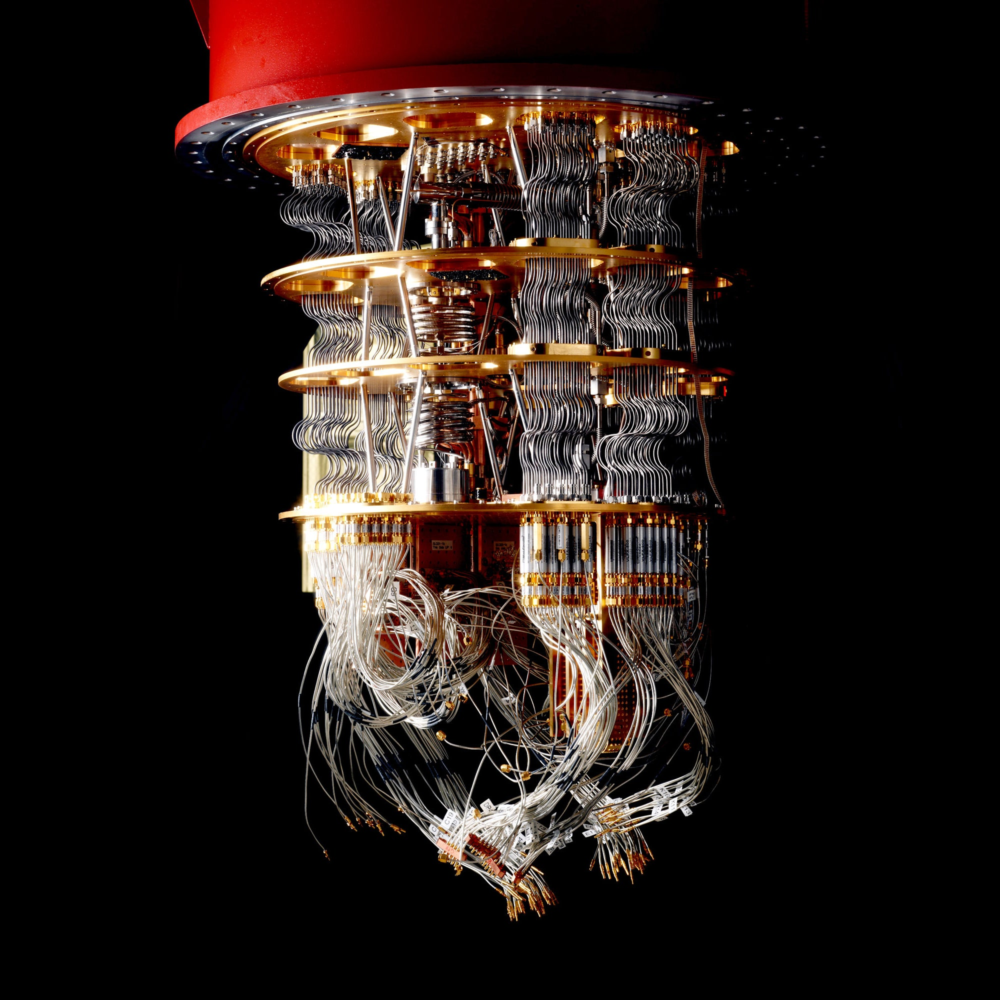

quantum computing for finance
A webinar presented by D-Wave that presented the possibilites and applications of quantum computing in finance. The speakers were Susan Davis, Jai Ganesh, and Alex Condello. The webinar was also recorded and posted here.
Agenda
- Quantum Computing
- Business Applications
- Mphasis Energy Optimized Network (EON)
- D-Wave Practical Quantum Computing
- Quantum Computing Demos
Evolution of Computing
- Vacuum tubes -> transistors -> integrated cirucuits -> microprocessros -> quantum computers
- Moore's Law trying to be obeyed by following microprocessors with quantum computers
What is Quantum?
- Classical computer store information in binary bits (0,1)
- Quantum computers use qubits (subatomic particles) which can existed in a superpostion of multiple states, i.e combinations of 1 and 0
- A quantum system ca exist in two or more states at once
- They are manipuated using precision lasers or microwave beams
- A quantum computer with several qubits in superpostion can compute at vastly higher speeds and can calculate multpile outcomes
- In quantum computing, qubits are entangled which indicate that a change in one qubit can influence another regasdless of physical distance
- The more qubits -> the bigger the exponential increase in computational power
Quantum Properties
- Quantum Superposition
- A system exists in several separate quantum states at the same time
- Quantum Entanglment
- "Spooky action at a distance" - Albert Einstein
- Two particles/objects interact with each other regardless of range (disobeys classical physics)
- Quantum Coherence
- The maintained superposition and inteference of the quantum system
Steps in the Working of a Quantum Algorithm
- Encode the input data into the state of a set of qubits
- Bring the qubits into superposition (superposition)
- Apply an algorithm simultaneously to all the states; one of these states holds the correrct answer (entanglement)
- Amplify the probability of measuring the correct state (interference)
- Measure the output that has recieved the highest probability
Benefits of Quantum Computing
- Bloch Sphere - Reduces search space of parameters -> reduced computational time
- Quantum Tunneling - Helps reach the optimal solution -> optimal solution
- Quantum Enchanced Feaute Map - Helps capture non-linearity -> improved prediction
Business Applications
- Optimizations - Finanical portfolio, logisticsroute, manpower roster optimization
- Machine learning - Anomaly detection, financial risk analytics, NLP, image analytics
- Simulation - Risk modelling, climate modelling
- Cybersecurity - Cryptography
Quantum Computing in Financial Services
- Cryptography - Cryptographic tech that resist attack from quantum machines
- Marcroeconomic Forecasting - Quantum machine learning algorithms to build macroeconomic forecasts
- Market Simulations - Complete simulations in the quantum system for optimized investments and hedging strategies
- Risk Analysis - Analyze and identify risks in real time at both the portfolio market levels
- Portfolio Managment - First quantum applications for the financial industry to go to market
- Credit Scoring - Increase the speed and enhance the accuracy of credit screening and scoring
- Anomaly detection & Fraund Prevenetion - Pattern recognition algorithms for automated fraud detection
- Target Product Offering - Real-time, targeted financial products to consumers based on their spending patterns, browsing history, etc.
- Security Pricing - Real time Monte Carlo simulations to calculate derivative pricing
- Treasury Management - Risk-optimized asset allocations to ensure liquidity even in emergency situations
Financial Services
- Tradeteq uses quantum computing to enhance credit screening
- Nomura, Barclays, BBVA use it for portfolio optimiization
- Commerzbank use it for optimized loan portfolios
- Goldman Sachs uses it for security pricing
- J.P. Morgan uses it for trading strategies
Technology Choices
| Quantum Annealer | Universal Gate model | |
|---|---|---|
| Current Speed | Fastest with 5000 qubits, easier to build | One of the fastest at 72 qubits |
| Parameters | Low noise in comparions -> more qubits -> more parameters | Lower parameters in comparison |
| Applications | Best for optimizaion, NP problems | General purpose and flexible |
| Risk | Digital annealers work at room temperature | Difficult to build (stability scaling), and undeterministic future |
Challenges with Quantum Computing
- Limited number of qubits available
- The data needs to be preprocessed to be readily availbe by the quantum hardware
- Need to establish a protocol between the quantum and classical system
- There is no industry standard way of doing so efficiently and effectively
Mphasis EON
- Handle the preprocessing and feature engineering of the data before preparing the information to a quantum state
- Reduces the dimensionality to suit the qubit requirements
- Preprocessing the data to suit quantum properties enchances the learning of the circuit and results in better accuracy
Considerations while adopting Quantum Computing
- Quantum computing challenges the way computers science and logic is approached
- Most algorithms will need to be redesigned and rewritten using quantum computing paradigms
- Quantum computers are thousands of times faster than conventional computers for specific problems
- Optimization, machine learning, and simulation needs to be apporached differently
- Due to quantum tunneling, power consumption is reduce by an order of magnitude
- Many standard encryption techniques and internet systems will fail as quantum computers can solve them quite easily
- Quantum computers do not intended to solve every problem and is not a replacement for classical computing
Quantum Computing Cases
- Problems
- Which assests should be included in a portfolio? How should the portfolio change with the market?
- How to detect opportunities in different assest in the market and make profit when trading them?
- Anomaly detection in money transfer services
- Anomaly detection in credit card fraud to identify abnormal patterns in real-time transactions
- How to estimate the risk and return of a portfolio, or a company?
- Solution Approaches
- Optimization, machine learning, deep learning, simulation
Practical Quantum Computing
to be continued!
